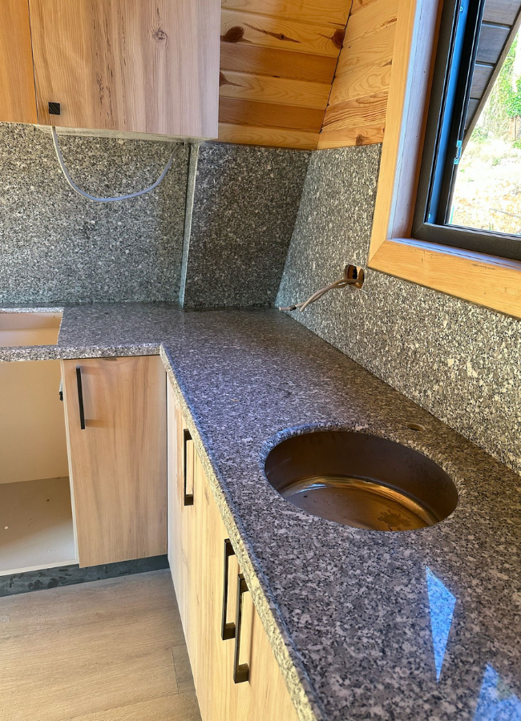

Sert, uzun ömürlü granit; Manavgat ve Alanya yoğun mutfakları için.
Granit tezgah mermere göre daha serttir. Çizilme ve ısıya karşı güçlüdür. Antalya Modern Mermer graniti atölyede keser, il genelinde monte eder.
Malzeme
Granit renk skalası geniştir. Siyah, gri ve benekli yüzeyler otel mutfağında da, evde de okunur. Kenar profili kullanım sıklığına göre seçilir.
Alanya, Mahmutlar, Side ve Kepez’deki yoğun mutfaklarda granit sık istenir. Montajda seviye ve derz, taşın sertliği kadar önemlidir.
Sık sorulanlar
Yoğun doğrama ve ısı varsa granit öne çıkar. Doğal damar istenirse mermer. Keşifte ikisini de gösteririz.
Evet. Metraj ve zaman planı proje büyüklüğüne göre ayarlanır.
Keşif
WhatsApp veya telefon. İlçe ve mutfak fotoğrafı yeterli.